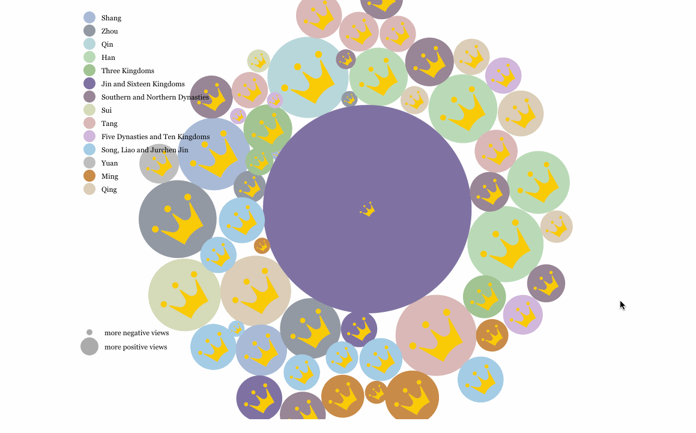
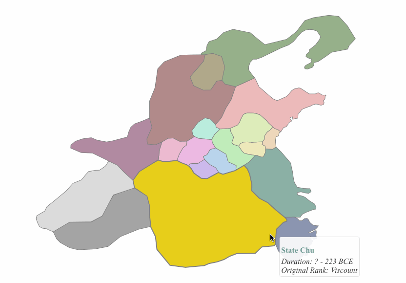
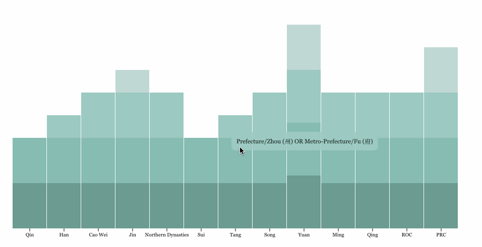
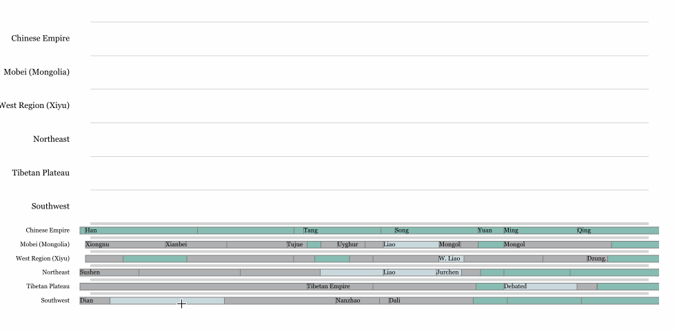
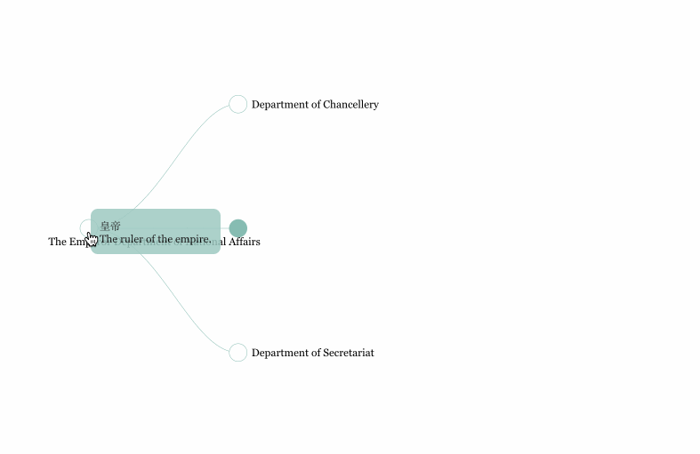
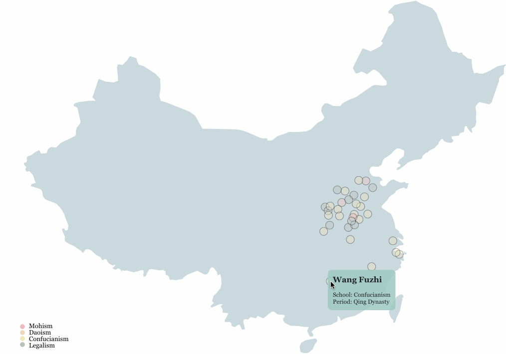
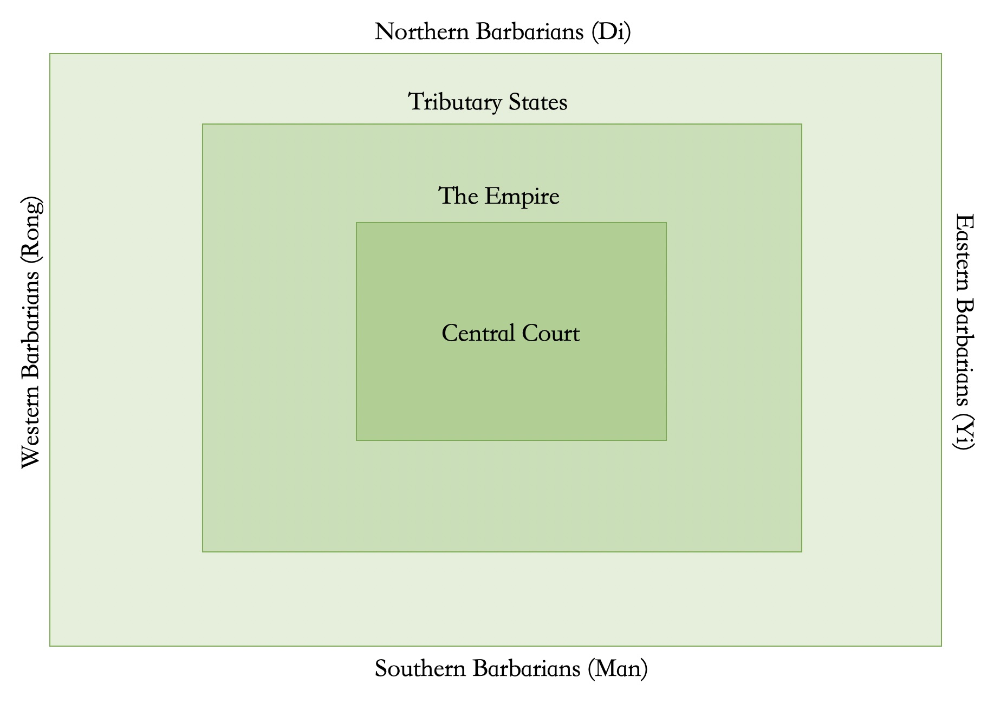
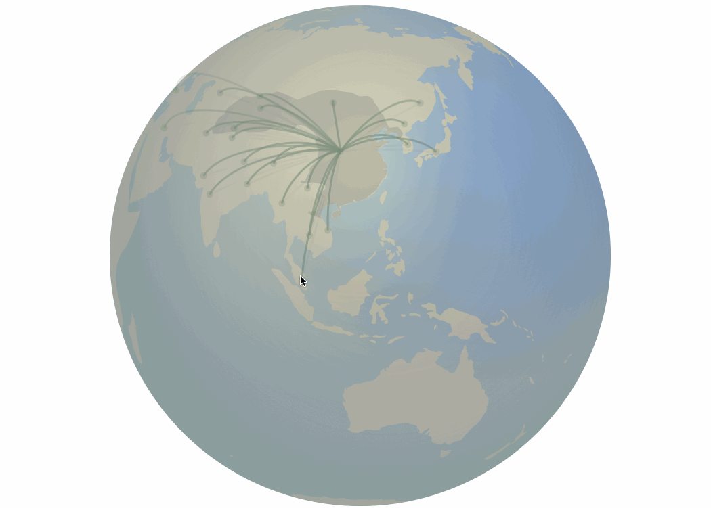

A First Glance of Chinese History
This interactive site was a web-based story map and illustraiton series originally developed by Shan Ye in 2013-14 to fulfill a course requirement of a history class at University of Michigan. It has been updated and expanded ever after, and was moved here from an old site recently. While you may use mobile devices to view this site, it is recommanded to use a browser on a computer.
Like other ancient civilizations, the civilization of China began in great river valleys of Yellow River and Yangtze River. The oldest archaeological evidence of ancient China is about 8500 BC, which marks the beginning of neolithic period of China.
At the early stage, Chinese history is semi-mythical, just like any other parts of the world. Some legendary ancient sage kings ruled China for centuries till 2100 BCE when Yu the Great established the first dynasty of China in the legends, the Xia Dynasty. Since then, China was ruled by successive dynasties, each ruled by a single family clan. In c. 1600 BCE, Shang Dynasty was established, and then, China gradually entered faithful history that has been proven by both historical accounts and archaeological evidences.
Below, you can find interactive illustrations regarding various aspects and periods of Chinese history. You may start with the timeline of China below. Click on different dynasties to explore more about this amazing civilization.
General Geography of China
In the China Proper (the 18 provinces of Han-ethnicity dominance), North China Plain and Lower Yangtze River Plain make up a large portion of the land. In that area, there are very limited number of mountain barriers or other tough landform to divide China into smaller pieces. Most tough terrains in China, such as Tibetan Plateau, Tian-Shan Mts and Gobi Desert, are distributed in frontier zones that separate China from the rest of the world, but not interrupt the inner China. Europe, however, is different. There are several mountain ranges, such as Pyrenean, Alps, Carpathian and Balkan mountains, that divide Europe into different isolated regions. The isolation helped with the development of different cultures in Europe, while the plain helped China developed a strong and unified culture.
China is located in the east part of the Eurasia continent, and it is strongly influenced by monsoon. During spring and summer, wind will blow from the ocean to China and bring warm temperature and good amount of precipitation. In that case, there is a golden window for agriculture in each year. In ancient time, people need a strong leader to tell them time and instruct them to go out to the field. In their culture, Chinese people welcome a strong authority (a kong or an emperor) to run the country, because that will benefit the agriculture, which was the most important business in ancient China. That was how the " thought of unification" was developed. With this thought, Chinese people will try to unify the country at any cost, even though they were aware that wars of unification would kill thousands of lives.
In short, China is isolated from the rest of Eurasia by terrains, deserts and the vast steppe, and its land size is big enough so people in ancient times did not need to explore the outside world. China is regulated by seasonly monsoon and frequent floods, and ancient China depended on small-scaled agricultural economy, so in ancient time, Chinese needed to have a leader with high authority to keep the society and economy stable. You may explore the geography of China with the following map. You can add and remove different layers and click on features to see how China has been influenced by terrains and climate.
Dynasties of China
Let's go over the sequence of dynasties in Chinese history.Many people wonder how many dynasties were there in total throughout the history of China. The answer to this question can be both simple and complicated, because there are different ways to define a dynasty. Scholarly, a dynasty is a period of time in China and other countries of sinosphere during which the country is ruled by successive monarchs (emperors, kings or other titles) from a single family clan. However, this definition does not help us tell how many dynasties there were in ancient China. Some people may think that Chinese dynasties are chronologically straightforward, which means they came one after each other with neither overlaps nor gaps.
This is not the case. Both gaps and overlaps did exist in the history. For example, Qin dynasty ended in 206 BCE when the capital city was captured by rebellion armies. However, it was not until 202 BCE that the next dynasty, Han, was established. There was a 4-year gap between these two major dynasties, during which there was a major civil war between different contenders of the throne. Some other minor gaps also existed (and might be simplified in the timeline).
Overlaps between dynasties are more common in Chinese history. Sometimes, a dynasty was established while the forerunner was still there. An example is that when Kublai established Yuan dynasty in 1271, the remnants of Song dynasty still existed in the south. It took Yuan dynasty several years more to completely wipe out the Song forces. In some other cases, different dynasties might exist along with each other at the same time period. For example, there was a long period called Southern and Northern Dynasties, during which China was divided into two halves and each half was ruled by different dynasties.
To make things more complicated, some dynasties (Zhou, Han, Jin and Song) were interrupted halfway through and restored later. For example, in 8 CE, Han dynasty was overthrown by a powerful chancellor in its court, Wang Mang, who established a short-lived Xin dynasty. However, royal clans of Han dynasty restored their regime in 25 CE and moved the capital city from Xi'an to Luoyang. Because Luoyang is to the east of Xi'an, historians usually use Eastern Han to refer to the restored Han dynasty and Western Han to refer to the original Han dynasty. By the way, naming this type of dynasties after the relative locations of capital cities at different halves is the standard practice of historians. So in this case, should Han dynasty be counted as one dynasty or two? Should Xin dynasty be considered as a real dynasty?
To make things more complicated, whether to consider some regimes in the history as dynasties is debated because of the traditional ideology of Mandate of Heaven, which generally means that a clan needs to have some authority installed by the heaven to be allowed to rule China. In this case, when China was fragmented, people might not regard some smaller kingdoms as lawful ruling regimes of China. This is especially the case if a regime is ruled by a minority group. For example, Liao dynasty, ruled by Khitans, and Jurchen Jin dynasty, ruled by Jurchens, were considered as barbarian states by people in Song dynasty, even though they were highly sinicized. In recent years, mainstream historians and Chinese people have accepted that Liao and Jurchen Jin were Chinese dynasties, but what about the Western Xia, a notable Tangut (a branch of Qiang people) regime contemporary with Song and Liao but only ruled parts of present-day Gansu and Ningxia? Many people still do not consider it as a dynasty. Also, different people might consider different regimes as the true lawful regime to represent China even though they existed at the same time. For example, after Han dynasty, China was divided into Three Kingdoms. Some people regard Cao Wei as the lawful successor of the Han dynasty because the founding emperor of Cao Wei formally accepted the crown from the last Han emperor. However, some others regard the Shu-Han in Sichuan region as the lawful successor because it was established by Liu Bei, a relative in Han's royal family.
Therefore, it is hard to tell how many dynasties there were in China. However, sometimes people only mention "major" dynasties of China, and from a beginner's perspective, knowing some history of major dynasties is more than enough to be introduced to Chinese civilization and cultures. In the interactive map below, you can explore different major dynasties by adding them to the map.
Famous Emperors
How many emperors are there in Chinese history? Many people wonder, but it is not easy to answer. Before the Qin dynasty, there were no emperors but kings. However, they were the monarchs of China and regarded as sons of heaven. Would you count them? Some rebellion leaders claimed to be an emperor but not widely recognized in the traditional culture or by historians (such as Yuan Shu, Wang Shichong, Li Zicheng and Hong Xiuquan). Would you count them? In very ancient times, legendary leaders were respected as emperors by later people, such as the Yellow Emperor and Flame Emperor, but they were actually not. Would you count them? Some people in later dynasties did not have a title of emperor but they were de facto emperors, such as kings of Wuyue Kingdom between Tang and Song dynasties; Some emperors were deposed during the reign such as the Prince Hailing of Jurchen Jin. Would you count them? Some people did not claimed to be the emperor themselves but was conferred an emperor later because their descendants became the emperor, such as Cao Cao and Genghiz Khan. Would you count them? Google says the China has 557 emperors. That’s only based on google’s own standard. There is no universally accepted answer to this question.
Only few people can name all emperors, but most high school students in China do know some emperors who were either brilliant rulers or tyranical rulers. Who are some of important emperors in ancient China? Check them out!

Enter to Play
How was the Empire administrated
Ancient Chinese empires were huge both in landmass and in population. How to administrate it was not so simple. During Zhou dynasty, Ji Dan, the Duke of Zhou, established two basic systems: Fenfeng and Zongfa. Fenfeng is a Chinese-styled feudalism or enfeoffment system. The central court could not directly control some remote areas due to the limitation of transporation back in time. Therefore, the central court ask some trusted people, usually family and clan members and sometimes other talented individuals, to help administrate those remote places. They established small feoffdoms (principalities), or so-called vassal states, with various sizes and military strengths based on their ranks. This was how China was administrated in early stages. The Zongfa system is a Chinese-styled patriarchy system, which determines who may be the legal successor when the old monarch, either in the central court or in different principalities, died. Traditionally, monarchs should have only one wife but could have multiple concubines. Only the eldest son of the wift could inherit the lineage of the clan, while younger sons of the wife and sons of concubines should not be regarded as rightful successors of the clan. The eldest son of the wife would thus inherit the nobility rank and title of his father (and thus the kingdom/principality) and majority share of the heritage.
Principalities have duty to serve the central court during the war if needed, and should pay annual tributary to the capital city. This system worked fine for several hundreds of years when the authority of the central court was there. However, once the central court lost its power, the Fenfeng system would break down, and this was what happend in 771 BCE when the incompetent King You of Zhou was killed by barbarians and the capital city was destroyed. After that, principalities gradually rose in power and China entered a long period of chaotic warfare, a period called Spring and Period, and followed by Warring States period. You can see major principalities during this period in the map below.

Enter to Play
When Qin dynasty was established in 221 BCE, the Qin Shi Huang emperor thought that it was the Fenfeng system that caused the endless chaos in the past hundreds of years. Therefore, he abolished the Fenfeng system and established a new style of the administration: the Prefecture and County system, or Jun-Xian system. In this system, the empire was divided into prefectures, each was further divided into counties. Officials, rather than family or clan members, administrated those prefectures and counties, and they were directly controlled by the central government. This system made the empire stable. Later dynasties generally followed this system with some small variations. For example, in the early stage of Han dynasty, the Emperor Gaozu of Han trusted his family members very much and questioned loyalty of normal officials, so he mixed Fenfeng and Jun-Xian systems up. Half of the empire was administrated by prefectures and counties while the other half was administrated by several principalities. This led to the Riot of Seven States during Emperor Jing's reign, and later, Emperor Wu started to break down principalities into smaller pieces by launching a regulation named Tui-En-Ling. After that, principalities lost their power and were no longer threats to the central court.
The hierarchy of the administrative system in ancient China changed through time. In some dynasties, there were only two levels, while in other dynasties, there might be three or even four levels. Generally, during earlier dynasties, when the central government was strong and influencial, there were fewer levels and the empire was administrated very efficiently; when the central court was weak, there might be more levels and the central court would have less influence on local governments. The change of the hierarchy through time could be found in the following illustration:

Enter to Play
There were also many special types of administrative systems throughout the history. For example, during Tang dynasty, there were officials titled Jiedushi, whose responsibilities were mainly to manage the military affairs in certain regions of the empire. After the An-Shi Rebellion, however, the central government lost control to some of powerful Jiedushi, who established the so-called Buffer Towns that were threats to the empire. There were also special divisions to administrate frontier zones. In 60 BCE, Han dynasty established the West Region Protectorate (Xiyu Duhu Fu) to administrate the Tarim Basin and Central Asia. This was the first time that Chinese empire entered the heartland of Eurasia. In Tang dynasty, six major protectorates were established after a series of military campaigns during the early stage of the dynasty. Tang border reached Outter Mongolia and contemporarily, Aral Sea of Central Asia (660 - 665). However, in 750s, Tang lost to Arabian army during a battle near Talas, and then it suffered from the An-Shi Rebellion. After that, Tang retreated from Central Asia. After 790s, Tang even gave up the Tarim Basin when it was attacked by the Tibetan Empire. Some of those protectorates were lost after that. The Tibetan Plateau officially incorporated into a Chinese empire for the first time during Yuan dynasty. The central government established the Bureau of Buddhism and Tibean Affairs to adiministrate the plateau. Ming dynasty also have some ties with Tibetan Empire. The Ming court established the U-Tsang Regional Military Commission to nominally rule the plateau. Ming also established Liaodong and Nurgan regional military commissions to rule Manchuria. See how China administrated frontier zones as well as contemporary history of surronding minority groups and kingdoms in the illustration below:

Enter to Play
The structure of the central court was also very complicated. One classic example of how the central court was administrated is the Three Departments and Six Ministries system established in Sui dynasty and completed in Tang. Below is a simple demonstration on how this system worked.

Enter to Play
However, the real situation was way more complicated than this because there are many other central departments and local departments that had certain relationships to this system. Below is an illustration of how the government worked during Tang dynasty. You can play with it to see how complicated the system was.

Enter to Play
How were offocials selected?
The huge empire of ancient China requires lots of human powers to manage. Therefore, selecting officials was critical. The way China used to select officials in local and central government changed throughout the history. In the early stage, Chinese government was run by certain clans, which means government officials could be hereditary. In Han dynasty, a system named Cha-Ju was established to select officials. In this system, local governments like prefectures and countires were responsible to nominate new officials based on candidates' filial morality, honesty and talent. During Jin dynasty and Southern and Northern Dynasties, the dominante system was called the Nine-Rank system. In this system, new governors were nominated based on their social status in the hierarchy of nine ranks. These systems have significant and obvious limitations and some real talented people never got a chance to become an official. In Sui and Tang dynasties, the Imperial Examination, also known as Keju system, was established to select people with real talent and to encourage more people to be educated. In the Keju system, everyone got an equal chance to enter the administration system of the empire. There were different levels of the exam held by different levels of government. The highest level exam was called Dianshi which literally means "the test in the palace hall", and this level of exam usually was given by the emperor himself. People got the first place in Dianshi were called Zhuangyuan, which was one of the highest honors and biggest dreams that scholars of ancient China had. This examination system is considred as one of the greatest inventions that ancient China ever had. The Keju system lasted for more than 1300 years until it was abolished in 1905 by Guangxu Emperor of Qing dynasty. In the interactive map below, you can find some interesting data regarding the highest-level Keju exams during Northern Song, Ming and Qing dynasties. You can explore the distribution of successful candidates in different dynasties, as well as some basic information of those who passed the highest-level exam and became highly ranked officers in the central court.
Data are from the China Biographical Database at Harvard University and the China Data Center at University of Michigan. Please not that the biographical database is big in size so it might take a while for the map to load after the layer is selected.
Ideology, Philosophy and Religions
In Eastern Zhou, China was politically divided into small principalities, and so was the realm of ideology, which entered a prosperous period known as the Hunderd Schools of Thoughts. During this period, many schools of ideology that had remarkable influences on Chinese history and cultre were established. Among them, four schools were most noticable. They are Confucianism, Daoism, Legalism and Mohism.
Confucianism was established by Confucius and text (Four Books and Six Classics) that he compiled. Confucianists valued ethical practices and guidelines. They believed that the ruler of a state should be virtuous and kind, while normal people should be loyal. This school was further developed and popularized by Mencius who believed in good human nature and the role of destiny. Daoism was formally founded by Lao Zi and developed by Zhuang Zi. Daoists believed that humans and the society should obay natural principals. They thought that the best way to administrate a state was to adapt into the rhythm of the nature. Legalists were a group of people who believed that harsh laws and punishments were necessary to keep the society stable and to keep the state prosperous. Many legalists launched reforms in different principality states and had great achievements. Among those reforms, the one led by legalist Shang Yang in State Qin was the best-known one, and it reshaped Qin into a powerful state which eventually unified China. Mohists were some pacifists who were good at engineering. They helped various states build defensive weapons and they thought that in this way they could eventually terminate all wars.
In Han dynasty, Dong Zhongshu assisted Emperor Wu of Han in setting a revised version of Confucianism as the only official school of ideology in China. Since then, Confucianism has been the dominante school of thought for thousands of years. Daoism gradually changed from a school of thought into a religion, which is still one of the major religions in China today. Some components of Legalism were absorbed by Confucianism, and in later periods, some officials used Legalism methods to administrate the country especially during times of wars. Zhuge Liang of Shu-Han Kingdom was an example. Mohism and other smaller schools gradually disappeared.
In the later half of Han dynasty, Buddhism, a religion originated from Nepal, entered China along the Silk Road. It significantly spread out during Southern and Northern Dynasties, and became presperous during Sui and Tang dynasties. Confucianism actively absorb good components of Buddhism and Daoism, and so did the other two. As a result, Buddhism became localized in China and was well incorporated into Chinese culture. The three ideologies and religions merged and became popular at the same time in China during Tang and Song dynasties.
Confucianism went through several reforms later in the history, especially in Song and Ming dynasties by scholars including Zhu Xi and Wang Yangming. Some of those reforms were good but some others were controvercial. In Ming and Qing dynasty, the Neo-Confucianism was formally established. In the interactive map below, you can explore important ideologists and philosophers in Chinese history.

Enter to Play
Travelling, Foreign Relation and Tributary System

Ancient Chinese thought that they were at the center of the world, and thus named their land "Zhong-Hua", where "Zhong" means central and "Hua" means flower-like or magnificent. The land of China Proper is vast, so Chinese ancestors had limited knowledge regarding places far away from the center of the empire. Because Chinese civilization was relatively advanced compared with surronding tribes and smaller kingdoms, ancient Chinese had some stereotypes to others. This idea is illustrated by the figure below:

When the empire grew big, Chinese people constructed some amazing infrastructures to link different areas together. Some notable examples include the Chidao (expressway) of Qin dynasty and the Grand Canal of Sui and Yuan dynasties. The Chidao system was both for the military purposes and for Qin Shi Huang's grand tours. The Grand Canal system constructed in Sui dynasty and re-routed in Yuan dynasty was one of the most important achievements and legacies of ancient China. It linked watersheds of five great rivers: Hai River, Yellow River, Huai River, Yangtze River and Qiantang River, which made it way much easier to travel meridionally, and it was one of key factors that kept China unified for the bulk parts of time. The north-south transportation relied on those canals for centuries until the construction of Beijing-Guangzhou Railway in 20th century.
There were also two dominante ways that ancient Chinese people took to communicate and trade with other countries. They are the Silk Road and Maritime Silk Road. Mainstream historians widely consider Zhang Qian of Han dynasty the person who set this road up. It connects China with Central Asia, and then Middle West and Europe. In Eastern Han, a missonary named Gan Ying travelled west along the Silk Road to establish trading relationships with western countries. He arrived in Parthia Empire and learned that there was another hugh empire, might as big as Han, just across the Persian Gulf to the Parthia. He wanted to enter that empire, but local Parthian people told him that it was impossible to sail across the gulf. That was an obvious lie, and it cost the best opportunity for two of the greatest empires of all time, Han Empire and Roman Empire, to have some direct contacts with each other along the Silk Road.
In short, although China's geography is relatively isolated, it still had foreign relationships with other countries, thanks to the Silk Road. Below is an illustration of countries that had trading activities or conflicts with Tang dynasty.

Enter to Play
The Silk Road was not always available. When China or any other region along the way were at war, the route was cut off. In Middle Ages, Arabs learned how to sail across the Indian Ocean, and thus the Maritime Silk Road was established. This benifited countries in Middle East, Easterm Afroca, Southern Asia, and Southeastern Asia, as well as the southeastern coast of China. In ancient time, southern China was regarded as a place as bad as hell. It was the destination to expel criminals. When Northern China was in chaos (like Sixteen Kingdoms, the An-Shi rebellion, and the Song-Jurchen wars), people immigrated southwards and started to develope the south. When the Maritime Silk Road was available, southern China's economy was significantly improved. Coastal cities like Quanzhou, Fuzhou, Ningbo and Guangzhou became major ports. The heyday of Maritime Silk Road was in Song and Yuan dynasties and it reached the greatest extent during the reign of Yongle Empire in early Ming dynasty. During this reign, Zheng He had his voyages to various countries around the Indian Ocean. It predated European sailings, and the size of Zheng He's fleet was several times bigger than that of Columbus's. However, Ming and Qing emperors then released policies to ban the maritime trading because of the invasion of pirates. The Tributary System was fully established in Ming and QIng dynasties. China then had some tributary states that pay annual tributaries to the empire. Some most significant tributary states included Japan, Korea, Vietnam and Liu Qiu (Ryukyu). They were not a part of Chinese sovereignty but China had some degree of suzerainty over those states. This is a unique case in the history of international relation. To Chinese emperors in Ming and Qing, trading with those states were enough for the empire, so they were able to shut down the maritime trading with the rest of the world. This marked the end of the gold era of Maritime Silk Road, and it also cost China the opportunity to get envolved in the Great Sailings.
The Role of Climate
Some scholars argue that climate change is a key driver of Chinese history. Based on reconstruction of past climate based on historical accounts on temperature, species, pollens, hydrological properties of rivers, and astrochronology, climatologists have reconstructed reliable temperature anomaly curves of China from 21th century BCE to the modern era. There are some correlations between the warm and cold periods and the relative strengths between China and northern nomadic people. The idea is that when the climate was warm, the agricultural-based Chinese civilization was strong and influencial; when the climate was cold, China would suffer from more natural disasters, and northern nomadic tribes, confederations or empires (e.g., Xiongnu, Xianbei, Khitan, Mongol, etc.) would also invade China because their homeland of the steppe was too cold. Below, you can find an illustration based on the temperature reconstruction by Zhu Kezhen. You can determine whether this argument is robust enough by yourself.

Enter to Play